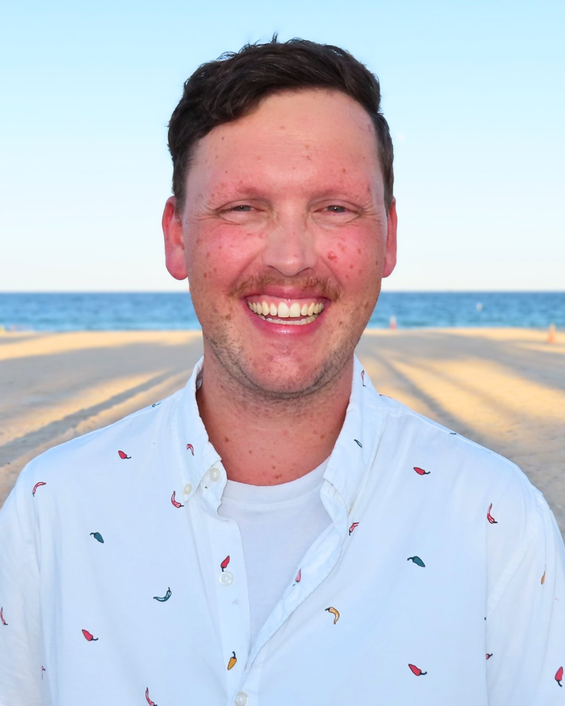

Websites with rhythm, clarity, and soul.
"Good web design is simply good teaching scaled to the digital world."
I design thoughtful, highly-accessible digital experiences for learning communities, nonprofits, faith communities, and creatives. Shaped by a professional background in PreK-12 education, music performance, and civic leadership, I build clean, intuitive websites that help mission-driven organizations and artists speak clearly to the communities they serve.

“Designed by an educator. Composed like a performance.”
Digital environments built with purpose.
My design practice centers around clean structural systems, deep aesthetic atmosphere, and complete accessibility guidelines. Whether tailoring architectures for a school layout, an advocacy program, an affirming church home, or an independent artist, the target is to spark instant trust and dynamic engagement.
Everyday Advocates
A vibrant digital ecosystem crafted for a grassroots civic nonprofit. This multi-layered platform features an integrated 15-category public resource directory and real-time community reporting forms, streamlining complex civic engagement into a clear, high-access interface built to organize and support everyday neighborhood issues.
Explore the Project →Colonial Beach Baptist
A graceful digital identity redesign built to expand local community outreach and welcome new families. The layout mirrors the strong, classic architectural lines of the physical building, carefully balancing comprehensive administrative site organization with an open, caring atmosphere.
Zoe McCray
An atmospheric, premium editorial showcase tailored for a multi-faceted vocal recording artist, arranger, and musical theater director. This live digital portfolio structure balances an elegant fine-arts aesthetic with clean, performance-driven multi-genre professional storytelling.
Explore the Project →Digital stages for every story.
In a world where technology can often feel automated and impersonal, I believe true credibility is built on transparency and inclusion. I design thoughtfully structured digital homes for organizations that prioritize real human impact, moving beyond simple web pages to create environments where every user can truly thrive.
Whether I am architecting Teacher Command Centers that help educators reclaim their time, or crafting audition-ready portfolios for performers, every project I lead is grounded in the essential standard that your site must be easy to perceive, navigate, and understand for everyone. This is design that is accessible by default — built with integrity from the first line of code to ensure your digital stage is ready for your entire community, without exception.
The Visionary Schoolfront
When families can't find what they need, they choose a different school.
Most school websites were built to exist — not to work. They're hard to navigate on a phone, full of outdated information, and invisible to families searching Google. I design school websites that are easy for your office staff to update, easy for families to navigate in any language on any device, and built to meet federal accessibility standards (WCAG 2.1 AA) so every prospective family — including those with disabilities — can find what they need and feel confident reaching out.
- Mobile-first design so parents can navigate from their phones
- Clear enrollment and contact flows that reduce front-office phone traffic
- Meets federal accessibility guidelines so all families are included
- Accessible by Default — not a feature you have to ask for
Starting at $1,500 · Range $1,500–$4,500
The Digital Encore Suite
Your next audience member is searching for you right now.
Arts organizations live and die by visibility — and a website that looks beautiful but can't be found, doesn't load on a phone, or can't be used by someone with a hearing or vision impairment is leaving audiences, donors, and volunteers behind. Drawing on direct experience in musical theatre production, choral direction, and vocal performance, I build performing arts websites that showcase your work beautifully, reach every audience member, and make it simple for people to buy tickets, donate, or get involved. All video content is captioned. All imagery is described. Every performance gets the audience it deserves.
- Video galleries with captions so deaf and hard-of-hearing audiences are included
- Ticket, donation, and volunteer signup flows that actually convert
- Performance archive and press materials for grant applications
- Accessible by Default — every audience member, every time
Starting at $1,250 · Range $1,250–$3,500
The Leading Role Portfolio
Your body of work deserves a home that works as hard as you do.
Whether you're a vocalist pursuing auditions, a teaching artist growing a studio, or a multi-hyphenate performer building a professional brand, your website is your calling card — and it needs to be working when you're not. Built from direct experience, this portfolio package gives you a site that showcases your artistry, makes it easy for directors and clients to reach you, and represents you at the level you're performing at. No templates that look like everyone else's. No jargon, no complexity — just a clean, compelling presence that opens doors.
- Audition-ready bio, headshots, and performance media
- Private lesson inquiry and booking flows
- Repertoire lists and press materials, organized and accessible
- Accessible by Default — every casting director can use it
Starting at $450 · Range $450–$1,200
The Digital Sanctuary Solution
Someone searching for a welcoming community is going to find you first on Google.
For LGBTQIA+ affirming congregations, progressive faith communities, and values-driven nonprofits, your website is often the first moment of contact for someone who has been turned away elsewhere. That moment matters. I build warm, welcoming digital spaces that communicate care and inclusion before anyone ever walks through your door — with resource directories, event calendars, giving flows, and design that signals belonging to the people who need it most. Accessibility here isn't just a technical standard. It's an expression of your values.
- Affirming, welcoming design language and copywriting
- Resource directories, event calendars, and online giving
- Built so people with disabilities can fully participate
- Accessible by Default — a seat at the table for every visitor
Starting at $800 · Range $800–$2,500
Does Your School Website Pass the Trust Test?
Most school websites weren't designed with accessibility in mind — and that means real families, students, and community members are being quietly left out. A parent using a screen reader. A prospective student navigating with a keyboard instead of a mouse. A family whose primary language isn't English, trying to find the enrollment form on their phone. The question isn't whether your website works — it's whether it works for everyone.
I build websites that are Accessible by Default — meaning accessibility isn't an add-on or an afterthought. It's the foundation. The standard I build to is WCAG 2.1 AA (Web Content Accessibility Guidelines), organized around four principles known as POUR:
All information and UI components must be presentable in ways users can perceive — including those using screen readers, or who have low vision or color blindness. If a family can't see your enrollment button, they can't enroll.
All navigation and functionality must be operable via keyboard, switch device, or voice control — not just a mouse. A prospective student with a motor disability should be able to complete your contact form without friction.
Content and operation must be understandable. Plain language, clear error messages, consistent navigation patterns. If a parent whose first language isn't English can't understand your school calendar, you've already lost them.
Content must be robust enough to be reliably interpreted by assistive technologies — both current and future. A site built on brittle shortcuts will fail screen readers, voice assistants, and the next generation of access tools.
The Trust Test Checklist
Check your current site honestly. Every "No" is a barrier — legal, reputational, and human.
Check items above to see your score
In music education and vocal coaching, my guiding rule has always been to honor where your voice is at. I bring that exact same philosophy to digital strategy and web development.
Your online presence shouldn’t copy someone else, nor should it rely on a stiff, generic corporate template. It should meet your organization or studio exactly where it is — capturing your authentic purpose, your real-world community impact, and your true personality.
Websites are far more than rigid marketing tools; they are environments that real people step into. By balancing structured educational layouts with the natural cadence of storytelling, I compose digital channels where your unique work is heard clearly and beautifully.
Your website is often the first thing a prospective family sees, before they ever visit a classroom. I build sites that communicate safety, structure, and culture at a glance.
Donors and volunteers decide in seconds whether to trust you. Your site should make that decision easy by showing impact, building credibility, and making it simple to get involved.
Whether you're a teaching artist, Broadway performer, or running a multi-age studio, your online presence should book clients, showcase your work, and reflect the caliber of what you do.
Your congregation is a community, and your website should feel like one, too! I work with LGBTQIA+ affirming faith spaces, building warm, welcoming digital homes where every visitor knows they belong.
Let’s build something thoughtful.
If you are a mission-driven organization, an inclusive faith community, an educational institution, or a professional performing artist ready to elevate your digital footprint, you deserve a design partner who understands your world.